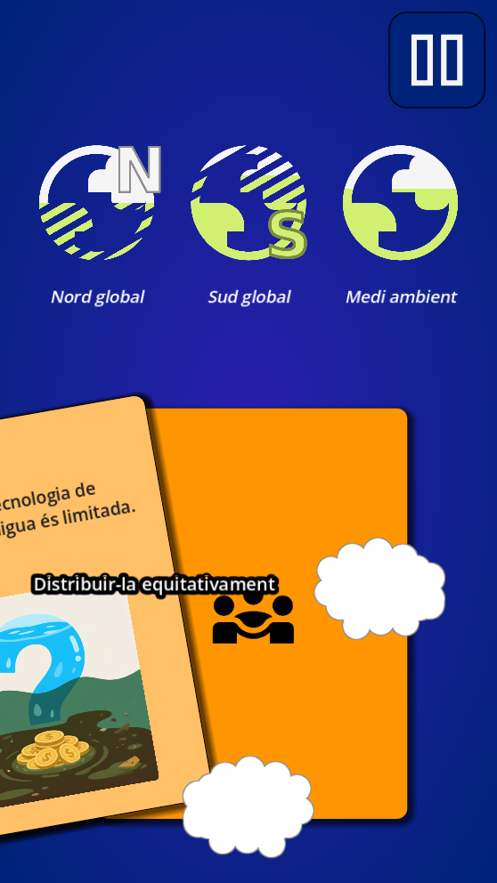
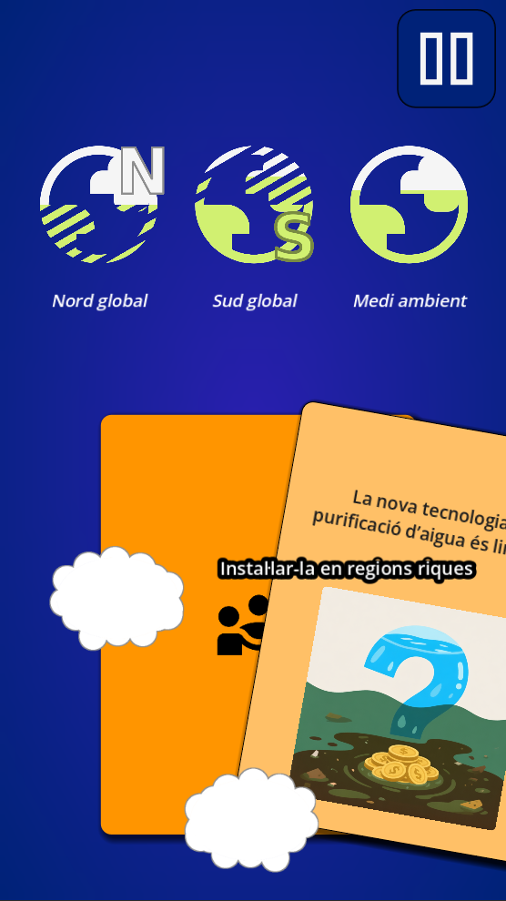
Decisions narratives
Cada carta planteja dilemes sobre desigualtat, sostenibilitat i drets humans.
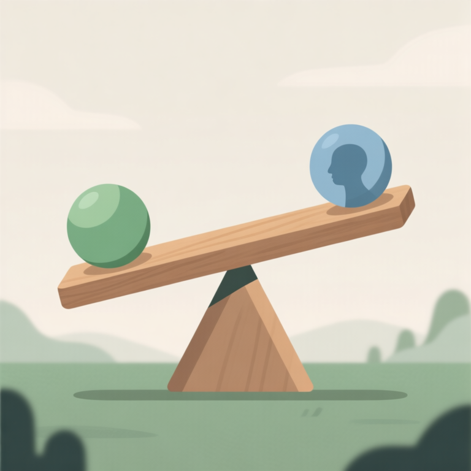
Pren decisions. Afronta conseqüències. Reflexiona sobre els drets humans i la justícia global.
Drets en Joc és un videojoc narratiu desenvolupat en col·laboració amb l'Institut de Drets Humans de Catalunya (IDHC).
El projecte busca divulgar els drets humans a través d'una experiència interactiva inspirada en jocs de presa de decisions com Reigns.
Cada carta presenta situacions socials, mediambientals i polítiques que obliguen el jugador a prendre decisions difícils amb impacte global.


Cada carta planteja dilemes sobre desigualtat, sostenibilitat i drets humans.
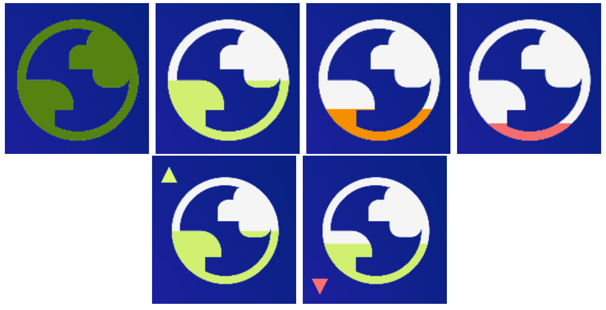
Les teves accions afecten el Nord Global, el Sud Global i el Medi Ambient.
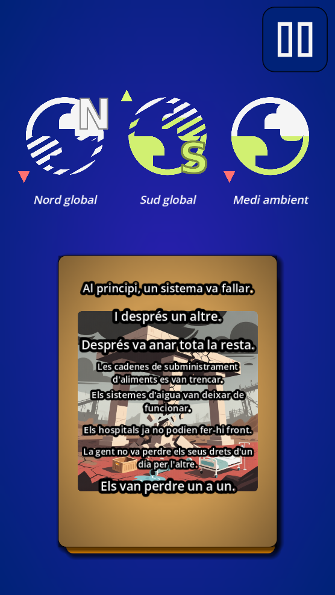
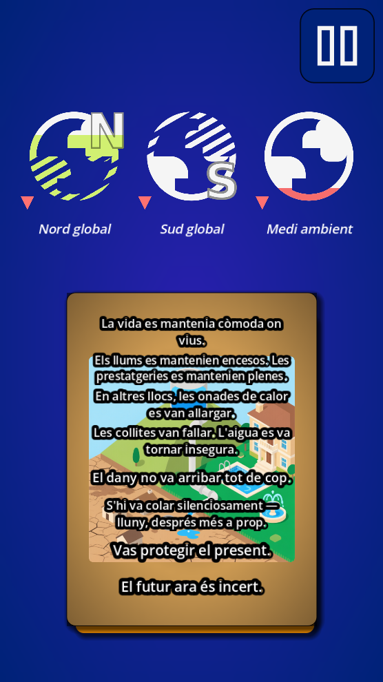
Les decisions acumulades poden desencadenar crisis, desequilibris i finals diferents.
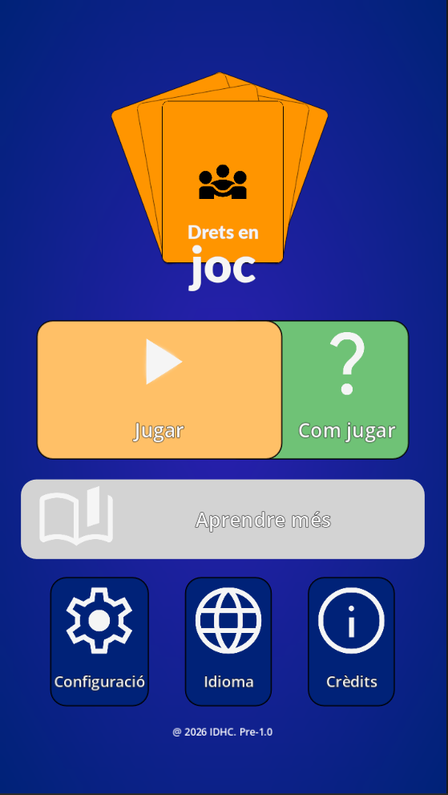
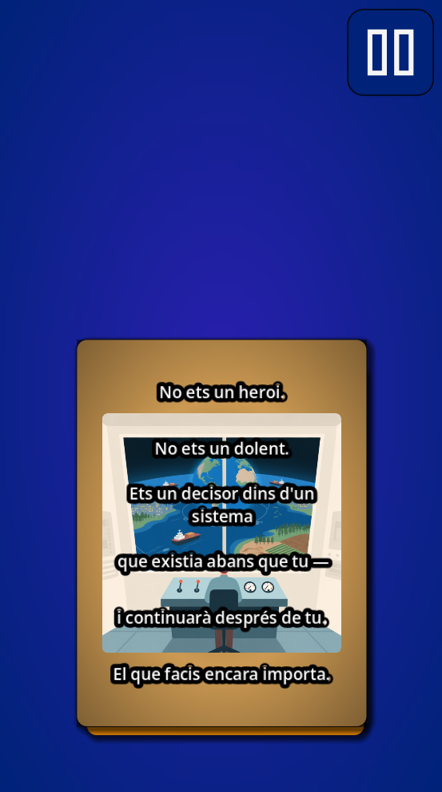
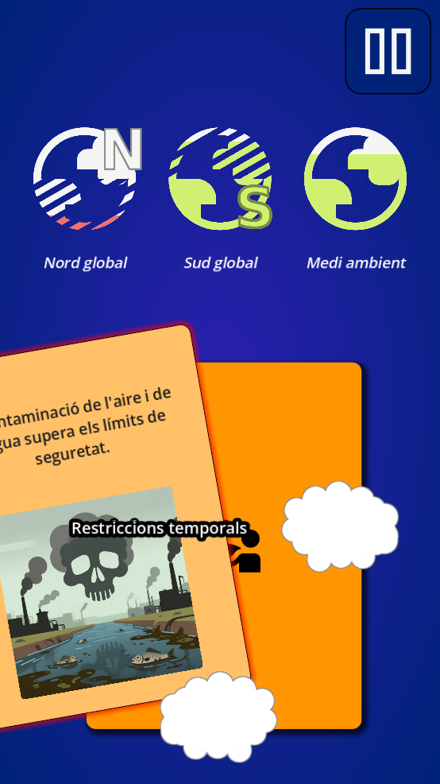
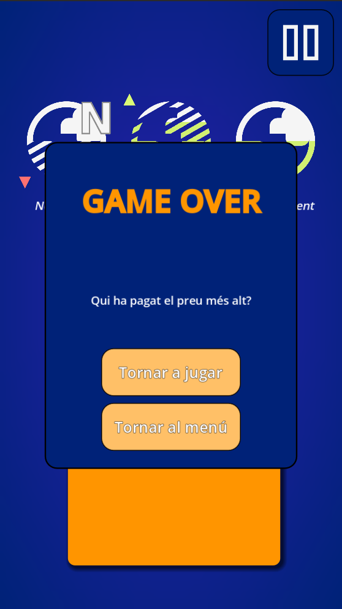
El projecte neix de la necessitat de crear noves formes d'educació i sensibilització utilitzant videojocs com a eina interactiva.
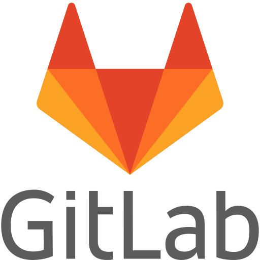
GitLabDesenvolupament, game design i documentació.
Suport en generació de continguts amb IA.
Direcció del projecte.
Supervisió acadèmica.
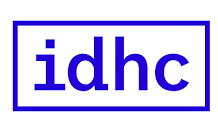
Col·laboració en narrativa i continguts de drets humans.